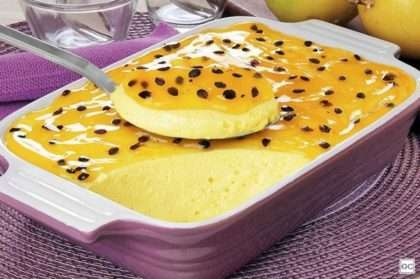
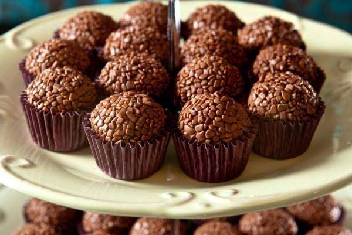
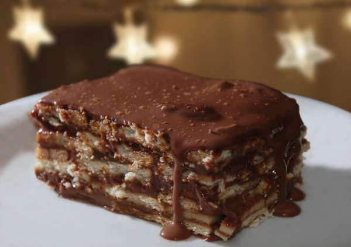
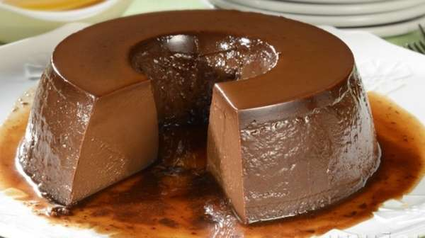

Receitas
Confira uma seleção especial de receitas de doces fáceis de fazer para todas as ocasiões.
Seja para aniversários ou para uma sobremesa, as receitas de doces que a gente separou vão
te mostrar muito mais do que você esperava.
Surpreenda-se e já vá salvando as delícias para fazer em casa!
Mousse De Maracujá
Ingredientes
- 1 lata de leite condensado
- 320 ml de suco de maracujá
- 1 lata de creme de leite sem soro
Modo de Preparo
- Em um liquidificador, bata o creme de leite, o leite condensado e o suco concentrado de maracujá.
- Em uma tigela, despeje a mistura e leve à geladeira por, no mínimo, 4 horas.
Brigadeiro
Ingredientes
- 1 Colher de sopa de manteiga ou margarina
- 1 Lata de leite condensado
- 4 Colheres de sopa de achocolatado em pó
- 1 Pacote de chocolate granulado
Modo de Preparo
- Esquente uma panela em fogo médio;
- Coloque uma colher de sopa de manteiga;
- Depois acrescente todo o leite condensado junto com a manteiga;
- Logo após acrescente quatro colheres de sopa de achocolatado em pó e mexa sem parar até começar a desgrudar da panela;
- Unte uma tigela onde a mistura será colocada e despeje a massa;
- Espere esfriar e depois vá fazendo as bolinhas com as mãos;
- Passe as bolas no chocolate granulado e pronto!
Doce de leite tradicional

Ingredientes
- 2 litros de leite integral;
- 500 g de açúcar;
- 6 g de bicarbonato de sódio;
- 1 fava de baunilha.
Modo de Preparo
- Deixe o leite com o açúcar em fogo médio para que se dissolva. Assim que começar a ferver adicione o bicarbonato e mexa;
- Cozinhe a mistura em fogo bem baixo durante três horas. Não se esqueça de mexer para que não grude no fundo da panela;
- A mistura pegará cor e ganhará corpo assim que a água evaporar do leite;
- Faltando dez minutos antes de atingir o ponto desejado, acrescente a fava de baunilha.
Pavê de Chocolate
Ingredientes
- 1 litro de leite;
- 3 ovos;
- 2 colheres de maisena;
- 1 pacote de biscoito maisena de chocolate;
- 1 lata de creme de leite;
- 1 lata de leite condensado;
- 3 colheres de açúcar;
- Chocolate em pó.
Modo de Preparo
- Leve ao fogo uma lata de leite condensado, as gemas, a maisena e o leite e mexa em temperatura média até formar o creme branco. Reserve;
- Agora é a vez do creme de chocolate: leve ao fogo, em outra panela, a segunda lata de leite condensado, um pouco de margarina e o chocolate e faça o brigadeiro até desgrudar da panela.
- Desligue o fogo e acrescente o creme de leite, mexendo bem.
Pudim de Chocolate
Ingredientes
- 3 ovos;
- 1 lata de leite condensado;
- 1 1/2 xícara de leite;
- 3 colheres de sopa de chocolate em pó;
- 1 colher de sopa de maisena;
- 10 gotas de extrato de baunilha.
Para calda:
- 1 xícara de açúcar;
- 1/3 xícara de água quente.
Modo de Preparo
- Bata no liquidificador os ingredientes, depois coloque devagar no meio da fôrma de pudim;
- Coloque para assar em banho-maria e deixe durante 45 minutos em fogo médio;
- Após assado, deixe esfriando para desenformar;
- Quando estiver frio, leve à geladeira para facilitar quando for desenformar;
- Quando for servir, desenforme o pudim da forma com a ajuda de uma faquinha lisa nas bordas, segure firme e faça movimentos para os dois lados enquanto roda a forma. Depois de completamente solto, coloque um prato e vire de uma vez. Pronto! Decore com chocolate granulado e sirva.